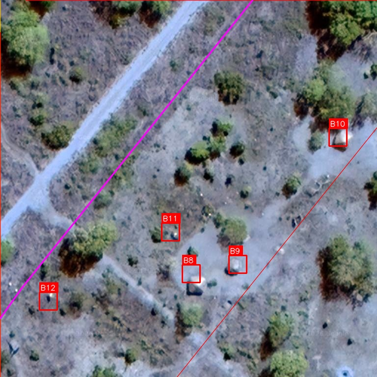
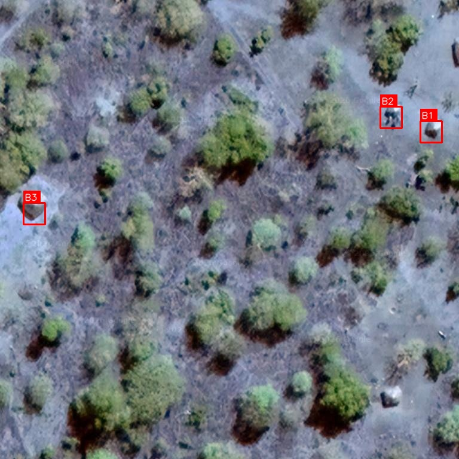
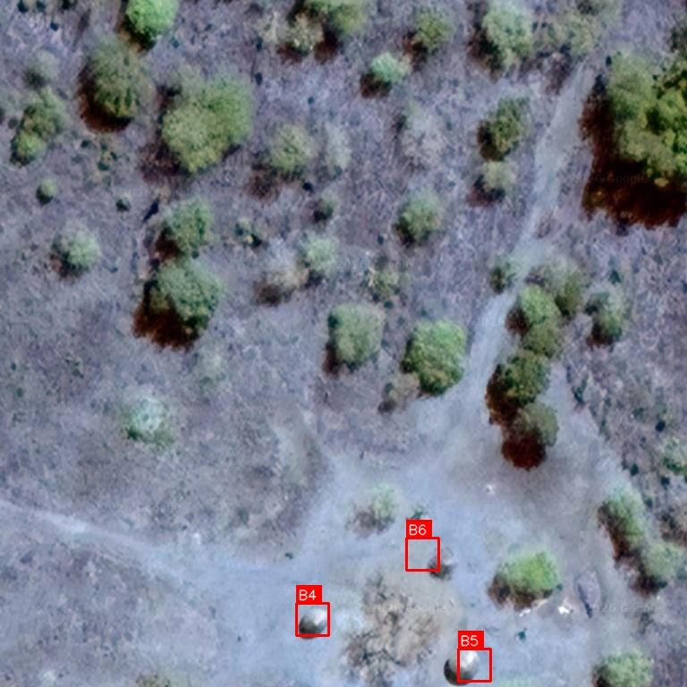

See It In Action
Real results from AfriScan — AI detection on satellite and drone imagery across Mozambique.

Pipeline Corridor Detection
5 buildings identified along a pipeline corridor with buffer zone overlays. Each structure labelled with a unique ID, GPS coordinates, and distance to pipeline — ready for the risk report.

Building Identification
Structures automatically marked with red bounding boxes and reference IDs. Buffer zones show proximity to the pipeline — red for 50m, orange for 100m.

Rural Compound Detection
Traditional compounds and homesteads detected in dense bush terrain. AfriScan's models are trained on African structures — thatched roofs, mud-brick buildings, and zinc shelters.

Full Corridor Scan
Entire pipeline corridor scanned in minutes. Every building within the buffer zone is identified, measured, and included in the professional risk report.